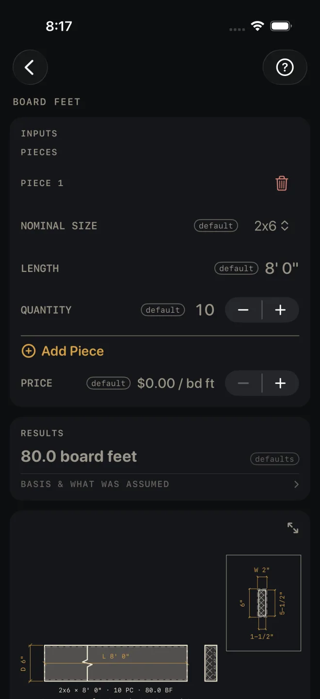
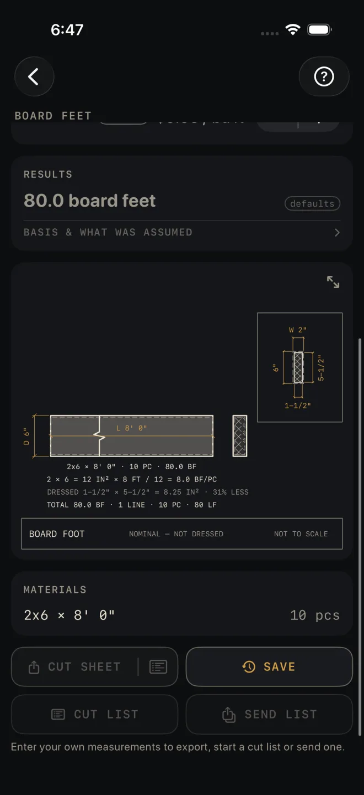

Board Feet
What it's for
Lumber is often priced by the board foot. Enter your pieces — size, length and how many — and Board Feet totals the footage, and the cost if you put in a price per board foot. The drawing shows the size you pay for against the size the board really is. Nothing here is checked against code.
Step by step
The example is the screen as it opens: one line of ten 2x6 at 8' 0", no price.

1 2 3 4 5- NOMINAL SIZE — pick the size the yard sells it as, from 1x4 to 6x6. The example is 2x6.
- LENGTH — the length of one piece. The example is 8' 0".
- QUANTITY — how many pieces of that size and length. The example is 10. Set it to 0 to leave a line out of the total without deleting it.
- Tap Add Piece for each further size or length. Every line gets its own three rows under a PIECE heading. The red bin beside the heading deletes that line.
- PRICE — the price per board foot, if you want a cost. Tap it to type a price, or use − and + to move it by $0.25. It opens at $0.00, which leaves cost out.
- Read RESULTS: 80.0 board feet. With a price entered, a second line gives the total cost.
- Scroll down to the drawing. The lines under the board show how the figure was reached.
- MATERIALS lists each line as a size, a length and a piece count.
Reading the results

7 8The headline is the total board feet across every line, to one decimal place. The total cost appears under it only when PRICE is above zero.
The drawing shows one board: the line that carries the most board feet. The boxed end section has the nominal size dimensioned above it and down its left side, and the dressed section inside that, dimensioned down its right side and along the bottom. The notes under the board read, in the example:
- 2x6 × 8' 0" · 10 PC · 80.0 BF — the line itself.
- 2 × 6 = 12 IN² × 8 FT / 12 = 8.0 BF/PC — the working for one piece: nominal width times nominal depth, times the length in feet, divided by 12.
- DRESSED 1-1/2" × 5-1/2" = 8.25 IN² · 31% LESS — what the board actually measures, and how much less wood that is than the nominal size you are billed on.
- TOTAL 80.0 BF · 1 LINE · 10 PC · 80 LF — the whole list: board feet, lines, pieces and lineal feet.
The title block reads NOMINAL — NOT DRESSED to remind you which size the footage is worked from. Pinch to zoom, drag to move around, double-tap to reset, or tap the expand button at its top right for the whole screen. See Reading the drawing.
MATERIALS has one row per line: size × length, and the piece count. Nothing is added for waste. This screen has no waste factor.
The buttons wait for your own numbers: the export buttons stay dimmed, and SAVE tells you to enter them first. After that CUT SHEET shares a PDF with the drawing and the list, the list icon at its right end shares the material list alone, SAVE puts the result in History, CUT LIST starts the list on the Lock Screen and SEND LIST sends a checkable list to another phone. BASIS & WHAT WAS ASSUMED opens to the one rule the count rests on: board feet come from the nominal size, width × depth × length in feet ÷ 12. The working is on the drawing.
Common mistakes
- Expecting the footage to match the wood in your hand. Board feet are worked from the nominal size. The DRESSED line on the drawing shows the difference.
- Entering a price per lineal foot or per piece. PRICE is per board foot. A per-piece price will give a cost that means nothing.
- Putting mixed lengths on one line. One line is one size at one length. Tap Add Piece for each different length.
- Taking the list as the order. There is no waste allowance here. Add your own pieces for defects and offcuts.
Related
- Cut List Optimizer — get the parts out of the fewest boards
- Framing and Deck — takeoffs that count the lumber for you
- Unit Converter
- Reading the drawing
- Cut sheets and templates
- Saving and History